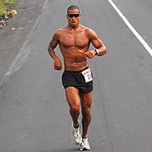
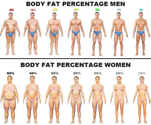

“But John, look how toned they are! They don’t look too muscly or bulky.
They look fit and lean and I’ll bet they eat the right things and workout and…”
Well, you’re right about all those things…but I guarantee you, none of what they did was to get “healthy.”
They wanted to look a certain way, so they did what it took to get there, regardless of whether or not it was good for them.
It took a lot of work, a lot of time, and a lot of dedication to get exactly to the point where their genetics allowed them
to look like that.
“Well, maybe they did spend a little too much time in the gym. I don’t want to go that far.
Does this look better? These people look a lot more functional and healthy.”

Those are two Olympic athletes – they probably care less about how they look, but everything they did was to
improve their ability to perform a certain task. They’re definitely fit to run/swim.
“Wait, so health is different from fitness? People always say ‘health & fitness’ – I assumed they always went hand-in-hand.”
Health IS different from fitness! Most everyone thinks they're two sides to the same coin when in actuallity, they are almost
exclusive.
Advertising, media portrayal, general consensus....we’re ALWAYS shown pictures of fitness and told it’s the
picture of health. It’s not.
Health is concerned with how long we live, with our quality of life…exercise is definitely a part of it, but it also
is concerned with nutrition, sleep, stress, relationships, friendships, job satisfaction…particularly the QUALITY of those
things. Those contribute to health among a myriad of other things.
Fitness is much simpler: how good are you at doing something? How fast can you run a mile? How much weight can you lift?
That’s even where looks and aesthetics reside: how fit is your body to look a certain way.
Can you get it to the point where it makes the primal part of our brains think “oh, that’s attractive”?
So questions like how low your bodyfat is and how big is your bicep is are concerned with numbers and metrics.
Now, a certain amount of fitness is required in order to get through our daily lives: some people have to be more fit
than others to get through the day. A construction worker needs more fitness than a lawyer to do his work and not hurt himself.
A 80 year-old needs to be fit enough to put the cereal box in the cabinet and get out the car, and strong enough to catch him
or herself if he or she falls.
But nobody NEEDS a six pack. Nobody NEEDS to run a mile in 6 minutes or bench press 500 lbs.
“So what do I need to know in order to maximize my health, then? What do I need to work on?”
Guys: 15-18% bodyfat. Girls 22-25%. 150 minutes of moderate cardiovascular exercise per week.
6 servings of fruits and veggies a day. Don’t drink too much alcohol. Don’t smoke. Have good relationships
with your friends and family. Sleep 6-8 hours a night.

“That’s not really exciting.”
Nope. 400 lb deadlift backflips and having a six pack are exciting. It might kill you, though.
But fitness doesn’t care about your quality of life. It doesn’t care about health.
Many athletes have compromised their body’s ability to function normally in order to get more performance out of it.
Some famous guy who played tennis, Roger Federer, would not be able to walk without almost an hour of warming up
because of the amount and intensity of training he put his body through to be the best at his sport.
He had to crawl on his stomach to his child’s crib when he woke up in the middle of the night.
Dan John, the Olympic shot putter, could not carry his brief case because of the pain in his right arm - all that
arm could do was put shot further than almost anyone else in the world.
The female gymnasts that dazzle us every 4 years with flips and twists? Often, the intensity of their training prevents
menarche, the onset of the normal female reproductive cycle. Many have the bone-mineral density of 80 year-olds.
When a bodybuilder steps on stage or a fitness model shows up to his or her photo shoot, he or she is at the weakest point
in a training regime – the body is dehydrated, it has been exhausted from hours of exercise, and weakened from the lack
of nutrition in order to create the look we all aspire to achieve.
Be careful what you wish for. Know what you’ll have to sacrifice and what you’ll have to do – and come to grips with
what is realistic. I’m not saying you can’t achieve it; you can if you practice the habits required of it, but understand
what your goals are.
Ultimately, health and fitness are both just goals and ways of thinking about what we can achieve with our bodies –
they’re both fine; there is nothing morally wrong with either. But once you start caring about how much you can bench or
whether you can see abs regardless of what’s best and healthiest for your body, you’ll definitely get fit.